Simply hold up the number of fingers to indicate the number you want to enter or the option you'd like to select.
Swipe right or left to go back a page.
After making a selection, indicate a thumbs up or thumbs down to confirm your selection.

At anytime, cross your index and middle finger to exit.
Pause on gesture